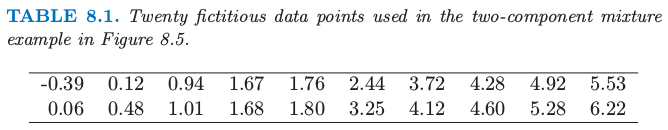
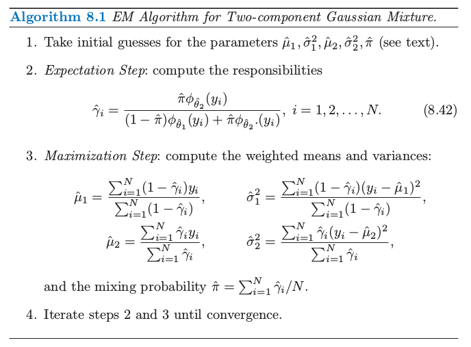
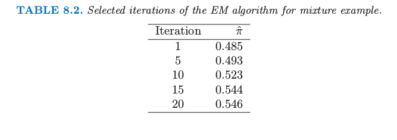
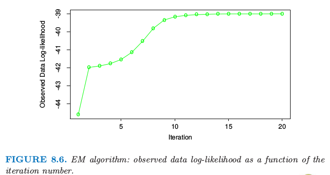
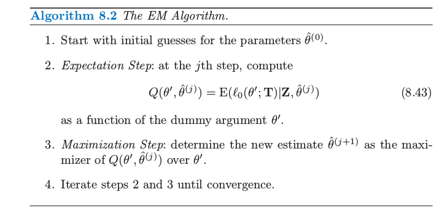
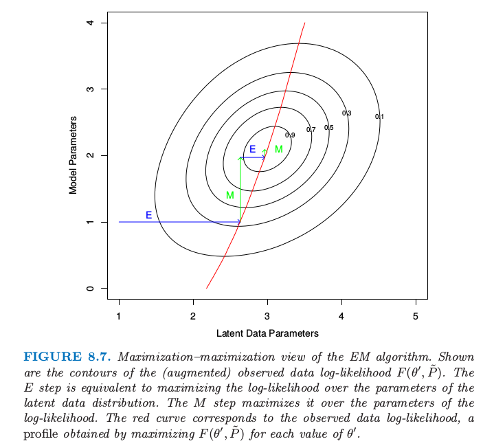

8.5 EM 算法¶
| 原文 | The Elements of Statistical Learning |
|---|---|
| 翻译 | szcf-weiya |
| 时间 | 2016-12-20 & 2017-02-01:2017-02-03 |
| 更新 | 2018-04-29, 2018-10-04 |
| 状态 | Done |
EM 算法是简化复杂极大似然问题的一种很受欢迎的工具．我们首先在一个简单的混合模型中讨论它．
两个组分的混合模型¶
这一节我们描述一个密度估计的简单混合模型，以及对应的求解极大似然估计的 EM 算法．这与贝叶斯推断中的 Gibbs 取样方法有着本质的联系．混合模型在本书其他部分的章节有讨论，特别是 6.8，12.7 和 13.2.3 节．
weiya注：Gibbs sampling
假设我们需要从 $\mathbf X=(x_1,x_2,\ldots,x_n)$ 中得到 $k$ 个样本，联合分布为 $p(x_1,x_2,\ldots,x_n)$．
记第 $i$ 个样本为 $\mathbf X^{(i)}=(x_1^{(i)},\ldots,x_n^{(i)})$．我们按下列步骤进行：
-
以初始值 $X^{(i)}$ 开始
-
需要下一个样本，记为 $X^{(i+1)}$．因为 $\mathbf X^{(i+1)}=(x_1^{(i+1)},\ldots,x_n^{(i+1)})$ 是向量，我们需要对向量的每一个组分进行抽样，基于 $p(x_j^{(i+1)}\mid x_1^{(i+1)},\ldots,x_{j-1}^{(i+1)},x_{j+1}^{(i)},\ldots,x_n^{(i)})$ 的分布对 $x_j^{(i+1)}$ 抽样.
-
重复上述步骤 $k$ 次．
图 8.5 的左图显示了表 8.1 中的 20 个模拟数据的直方图．

图 8.5. 混合模型的例子．（左图：）数据的直方图．（右图：）高斯密度的最大似然拟合（红色实线）和观测值 $y$ 的左边成分的解释度（绿色点线）作为 $y$ 的函数．

表 8.1. 图 8.5 中两个组分混合的例子中使用的 20 个模拟数据．
我们想要建立数据点的密度模型，然后由于数据点呈现明显的双峰，高斯分布不是合适的选择．这里似乎有两个潜在的分开的形式，所以我们将 $Y$ 看成两个正态分布混合的模型： 其中 $\Delta\in \{0,1\}$，且 $\Pr(\Delta =1)=\pi$．产生过程是很显然的：以概率 $\pi$ 产生 $\Delta\in\{0,1\}$，然后根据输出结果，分配给 $Y_1$ 或 $Y_2$．令 $\phi_{\theta}(x)$ 记为参数为$\theta=(\mu,\sigma^2)$ 的正态分布．则 $Y$ 的密度为 现在假设我们希望通过极大似然估计来拟合图 8.5 中数据的模型．参数为 基于 $N$ 个训练集的对数概率为 直接对 $\ell(\theta;\mathbf Z)$ 进行最大化在数值上是很困难的，因为求和项在 $\log$ 函数里面．然而，这里有一个更简单的方式．我们考虑一个类似 \eqref{8.36} 中取 0 或 1 的潜变量 $\Delta_i$：若 $\Delta_i=1$ 则 $Y_i$ 来自模型 2，否则来自模型 1．假设我们已经知道了 $\Delta_i$ 的值．则对数概率为
weiya 注：
而且 $\mu_1$ 和 $\sigma_1^2$ 的极大似然估计为 $\Delta_i=0$ 时样本均值和方差，类似地对于 $\mu_2$ 和 $\sigma_2^2$ 的极大似然估计为 $\Delta_i=1$ 时的样本均值和方差．$\pi$ 的估计为 $\Delta_i=1$ 的比例．
因为 $\Delta_i$ 的值实际上是不知道的，我们用一种迭代方式，替换 \eqref{8.40} 中的每个 $\Delta_i$，它的期望值 也称为模型 2 对于每个观测 $i$ 的责任 (responsibility)．我们用一种称作 EM 算法（算法 8.1 中给出）的过程来求解这个特殊的高斯混合模型．在期望 (expectation) 这一步，我们对每一个模型的每一个观测做一个软赋值：根据每个模型下训练集点的相对密度，参数的当前估计用来给 responsibilities 赋值．在最大化(maximization) 那一步，对极大似然估计中使用的 responsibilities 进行加权用来更新参数估计．
构造初始的 $\hat\mu_1$ 和 $\hat\mu_2$ 的一种很好的方式便是简单地随机选择 $y_i$ 中的两个值．$\hat\sigma^2_1$ 和 $\hat\sigma^2_2$ 都等于整体的样本方差 $\sum_{i=1}^N(y_i-\hat y)^2/N$．最大比例的 $\hat\pi$ 可以从 0.5 开始．
注意到实际中概率的最大值发生在当我们固定一个数据点，换句话说，对于一些 $i$ 令 $\hat\mu_1=y_i$，$\hat\sigma^2_1=0$．这给出了无限大的概率，但是这不是一个有用的解．因此实际上我们寻找概率的一个良好的局部最大值，满足 $\hat\sigma^2_1,\hat\sigma^2_2>0$．进一步，可以有多个局部最大值满足$\hat\sigma^2_1,\hat\sigma^2_2>0$．在我们例子中，我们用一系列不同的初始参数值来运行 EM 算法，所有的都满足 $\hat\sigma^2_k>0.5$，然后选择使得概率最大的那个．图 8.6 显示了在最大化对数概率的 EM 算法的过程．表 8.2 显示了在给定迭代次数的 EM 过程下 $\hat\pi=\sum_i\hat\gamma_i/N$ 是类别 2 中观测值比例的极大似然估计．


表 8.2. 对于混合模型选定的几次迭代的 EM 算法结果

图 8.6. EM算法：观测数据的对数似然关于迭代次数的函数
最后的极大似然估计为 图 8.5 的右图显示了从这个过程估计的混合高斯分布的密度（实心红色曲线），以及 responsibilities（绿色点曲线）．注意到混合在监督学习中也很有用；在 6.7 节我们显示了高斯混合模型怎样导出 radial 基函数的版本．
weiya注
自己实现了上述的模拟过程，具体 R 代码在这里
广义 EM 算法¶
上面的过程是对于特定问题的类别下最大化概率的 EM（或者 Baum-Welch）算法．这些问题的概率最大化是困难的，但是通过运用潜在数据（未观测）增大样本会变得简单．这也称作数据增广．这里潜在数据是模型成员 $\Delta_i$．在其它问题中，潜在数据是理应被观测到的实际数据但是缺失了．
算法 8.2 给出了 EM 算法的一般形式．我们的观测数据是 $\mathbf Z$，其对数概率 $\ell(\theta;\mathbf Z)$ 取决于参数 $\theta$．潜在数据或者缺失数据为 $\mathbf Z^m$，因此完整数据为 $\mathbf {T=(Z,Z^m)}$，对数似然函数为 $\ell_0(\theta;\mathbf T)$，$\ell_0$ 基于完整的密度函数．在混合问题中，$(\mathbf{Z,Z^m)=(y,}\Delta)$，且 $\ell_0(\theta;\mathbf T)$ 由 \eqref{8.40} 式给出．

在我们的混合例子中，$\E(\ell_0(\theta’;\mathbf T)\mid \mathbf Z,\hat \theta^{(j)})$ 是将式 \eqref{8.40} 中的 $\Delta_i$ 替换成了解释度 $\hat\gamma_i(\hat \theta)$．第三步的最大化仅仅是加权均值和方差．
我们现在给出一个为什么一般情况下 EM 算法有用的解释．
因为 我们可以写成 表示成对数似然函数，我们有 $\ell(\theta’;\mathbf Z)=\ell_0(\theta’;\mathbf T)-\ell_1(\theta’;\mathbf{Z^m\mid Z})$，其中 $\ell_1$ 是基于条件密度 $\Pr(\mathbf{Z^m\mid Z,\theta’})$．取关于由参数 $\theta$ 确定的 $\mathbf{T\mid Z}$ 分布的条件期望有 在最大化那一步，EM 算法最大化关于 $\theta’$ 的 $Q(\theta’,\theta)$，而不是实际的目标函数 $\ell(\theta’;\mathbf Z)$．为什么这样能成功地最大化 $\ell(\theta’;\mathbf Z)$？注意到 $R(\theta^*,\theta)$ 是关于 $\theta^*$ 的对数密度的期望，得到的密度是关于 $\theta$ 的，因此（由琴生不等式）当 $\theta^*=\theta$ 时（见练习 8.1）最大化关于 $\theta^*$ 的函数．
Ex. 8.1
已解决，详见 Issue 125: Ex. 8.1．
所以如果 $\theta’$ 最大化 $Q(\theta’,\theta)$，我们可以看到 因此 EM 迭代不会降低对数似然值．
这个论据也让我们明白在最大化那一步整体最大化不是必要的：我们仅仅需要找到一个值 $\hat\theta^{(j+1)}$ 使得 $Q(\theta’,\hat\theta^{(j)})$ 关于第一个变量是增的，也就是 $Q(\hat\theta^{(j+1)},\hat\theta^{(j)}) > Q(\hat\theta^{(j)},\hat\theta^{(j)})$．这一过程称之为 GEM（广义 EM）算法．EM 算法也可以看成是最小化的过程：见练习 8.7．
Ex. 8.7
已解决，详见 Issue 126: Ex. 8.7．
EM 作为一个最大化-最大化的过程¶
这里从一个不同的角度来看 EM 过程，看成一个 联合最大化 (joint maximization) 算法．考虑函数 这里 $\tilde P(\mathbf Z^m)$ 是潜在数据 $\mathbf Z^m$ 的任意分布．在混合例子中，$\tilde P(\mathbf Z^m)$ 构成了概率 $\gamma_i=\Pr(\Delta_i=1\mid \theta,\mathbf Z)$ 的集合．注意到从 \eqref{8.46} 式看，$F$ 是观测数据的对数似然函数（在 $\tilde P(\mathbf Z^m)=\Pr(\mathbf Z^m\mid \mathbf Z,\theta’)$ 上取值）．函数 $F$ 扩大了对数似然的定义域来，使得能够进行最大化．
原书脚注：
\eqref{8.46} 式对所有 $\theta$ 都成立，包含 $\theta=\theta’$．
EM 算法可以看成 $F$ 关于 $\theta’$ 和 $\tilde P(\mathbf Z^m)$ 的联合最大化，通过固定一个变量来最大化另外一个变量．固定 $\theta’$ 来对 $\tilde P(\mathbf Z^m)$ 最大化可以证明是 （练习 8.2）．
weiya 注：Ex. 8.2
已解决，详见 Issue 127: Ex. 8.2.
这是在求期望的步骤 E 计算得到的分布，举个例子，如在混合的例子中计算得到的 $(8.42)$．在 M 步骤时，我们固定 $\tilde P$ 来对 $\theta’$ 最大化 $F(\theta’,\tilde P)$：因为第二项不涉及 $\theta’$，所以这与最大化第一项 $\E_{\tilde P}[\ell_0(\theta’;\mathbf T)\mid \mathbf Z,\theta]$ 是一样的．
最后，因为当 $\tilde P(\mathbf Z^m)=\Pr(\mathbf Z^m\mid \mathbf Z,\theta’)$ 时，$F(\theta’,\tilde P)$ 和观测数据的对数似然函数是一致的，对前者的最大化也实现了对后者的最大化．图 8.7 展现了这一过程的示意图．

图 8.7. EM 算法的最大化-最大化角度．图中画出了（增广）观测数据对数似然函数 $F(\theta’,\tilde P)$ 的等高线．步骤 E 等价于在潜在数据分布的参数上最大化对数似然函数．步骤 M 在对数似然参数上进行最大化．红色曲线对应观测数据的对数似然函数，这是对每个 $\theta’$ 值进行最大化 $F(\theta’,\tilde P)$ 得到的曲线．
EM 算法的这个角度导出了 轮换最大化过程 (alternative maximization procedure)．举个例子，虽然不需要一次性对所有潜在数据参数进行最大化，但是可以每次最大化其中的一个，通过在步骤 M 来 轮换 (alternate)．
weiya 注
有点类似于 坐标轮换 (univariate search)，关于坐标轮换及其其他优化方法的介绍，可以参见nlpm．